A modified Double M-S array being used to record a singing guitarist.
{kind=link}
M-S miking is already a versatile technique, but it can be built upon to provide surround-sound recording and a whole lot more besides!
The Mid-Sides (M-S) stereo mic array should be familiar to most recording enthusiasts, but an interesting variation on it, often used in film and TV, is less often seen in music production. Called the ‘Double M-S’ or ‘MSM’ array, it offers several unique advantages and, usefully, the position of its two central mics can be altered to create a very versatile multi-directional (not necessarily ‘surround’) array with excellent mono compatibility. This makes it a good contender in situations such as recording a singing guitarist, where you might want some separation between two sources but wish to retain some sense of stereo width, or sources such as choirs, where it might be desirable to capture both the front and the rear in stereo. To understand how this array works you must understand the principles of coincident arrays in general, and of Mid-Sides in particular.
Coincident Arrays
In all coincident mic arrays, sounds from any direction always reach all the capsules at the same time, because the capsules are mounted very close to one other, so their signals are always phase-aligned. In a typical stereo coincident array, the capsules are arranged one above the other, such that they’re perfectly aligned in the horizontal plane, and the sound sources should be arranged to lie on the same plane. This deliberate avoidance of inter-channel time differences is critical to the precision of the perceived stereo image when the stereo signal is auditioned over stereo speakers; the physical spacing of the speakers creates the inter-aural time differences that our ears require to locate sound sources. The absence of time differences also removes the possibility of audible coloration due to comb-filtering, and guarantees mono-compatible recordings.
In typical stereo ‘X-Y’ arrays, the two capsules have the same polar pattern, but they’re angled left and right of the centre line to present a varying sensitivity to sound sources placed around the array. Inter-channel level differences are created due to the positions of those sources relative to the array.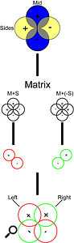
{kind=link}
For example, in a coincident X-Y array with cardioids, one mic ‘favours’ the left half of the sound stage, and the other the right. The ‘mutual angle’ between the two mics is typically 80-110 degrees. A central sound source is off-axis to both mics but captured with equal sensitivity. As the source moves left, the output from the left-facing mic increases and that of the right decreases. In simple terms, an inter-channel level difference of about 3dB results in a perceived sound image roughly a quarter of the way towards one speaker from the centre (towards the louder side); a 6dB difference corresponds to about halfway; a 9dB difference appears about three-quarters to one side; and a difference greater than 12dB seems to emanate from only one speaker.
The physical angle over which a source can move in front of the array while appearing to move between one speaker and the other is called the Stereo Acceptance Angle or Stereo Recording Angle (SRA), and is determined through the choice of polar pattern and mutual angle. For example, a ‘crossed cardioids’ array with a mutual angle of 90 degrees has an SRA of about 190 degrees, whereas hypercardioids at 90 degrees give an SRA of about 135 degrees. The original Blumlein technique with figure-8 mics and a mutual angle of 75 degrees gives an SRA of about 90 degrees, while figure-8s with a 90-degree mutual angle have an SRA of 75 degrees. A powerful interactive illustration of the SRAs associated with different mic array configurations can be found at www.sengpielaudio.com/Visualization-EBS-E.htm.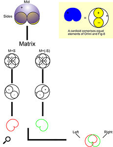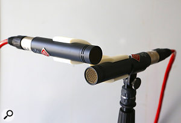A conventional X-Y stereo array.
{kind=link}
{kind=link}
Mid-Sides
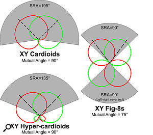The SRA and mutual angle for X-Y coincident arrays of mics with different polar patterns.When developing this system (and the associated two-speaker monitoring we now take for granted) at EMI’s laboratories in the early 1930s, Alan Blumlein described a related arrangement now known as the ‘Mid-Sides’ array. This is another coincident two-mic system, but instead of each mic favouring the left or right, one (a forward-facing ‘Mid’ mic) favours the centre and another (a figure-8 ‘Sides’ mic, facing sideways at 90 degrees to the Mid) the outer edges. The resulting signal must be ‘transcoded’ into a conventional left-right format for listening on loudspeakers or headphones, using some form of ‘matrix’. While the translation process might seem an unhelpful complexity, the Mid-Sides format affords such unique and important advantages in the manipulation of the stereo sound stage that it’s worthwhile. While the Sides mic must have a figure-8 polar pattern, and the pickup lobe on the left-hand side (as viewed from behind the array looking towards the sound stage) must have the same polarity as the Mid mic, the Mid mic itself can have any polar pattern — but the Mid mic’s polar pattern, in combination with the relative sensitivity of the Sides mic, determines the nature of the stereo image after transcoding. In effect, the transcoding process synthesizes an equivalent ‘virtual’ coincident X-Y mic array from the signals generated by the M-S array.
{kind=link}
For example, with an omni-pattern Mid, the transcoded X-Y equivalent is a pair of back-to-back cardioids (facing 90 degrees left and right), and the relative level balance between the Mid and Sides mics going into the matrix determines the overall width of the stereo image. Using a cardioid Mid mic, the X-Y equivalent approximates coincident hypercardioids, with the relative level of the Sides mic altering the virtual mutual angle, and thus the SRA.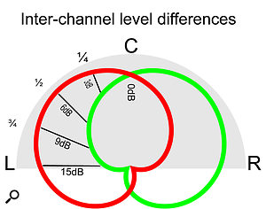Level differences in each mic in a coincident X-Y array, due to the position of the sound source in relation to the array, dictate where in the stereo sound stage the source will appear to be.
{kind=link}
With no Sides signal at all, only the Mid mic’s contribution remains, giving a mono sound stage. As the Sides signal contribution is gradually increased, a pair of virtual X-Y polar patterns starts to emerge, rotating left and right from the centre, and the perceived stereo image width increases progressively. Ultimately, when the Sides mic contributes more than the Mid the stereo image develops a ‘hole’ in the centre, and becomes exaggerated and unstable. The virtual left-right polar patterns also tend to become slightly more directional than that of the Mid mic as the contribution of the Sides mic’s figure-8 pattern plays a larger part in the virtual mic’s creation.
One key benefit of the M-S system, then, is that the perceived stereo width (the equivalent X-Y array’s SRA) can be adjusted by varying the level of the Sides signal relative to the Mid, either during the recording or in post-production. Another significant benefit is more accurate tonality for central sound sources — these arrive well off-axis to both mics in a traditional X-Y array and, especially with large-diaphragm capsules, this typically results in a slightly coloured sound, as the off-axis polar response tends to vary dramatically with frequency. In an M-S array, the Mid mic faces forward, so central sources are always directly on-axis, and captured as accurately as the mic can manage.
A more practical consideration is that it’s very easy to ‘aim’ an M-S array, since the mic bodies generally point directly toward the centre of the sound stage.
M-S Transcoding
The most challenging part of M-S recording used to be the transcoding. In days gone by, creating or patching the matrix could become convoluted and error-prone, especially when working with more than one M-S array. But M-S software plug-ins now make the process very simple, and many digital recorders include conversion facilities too — so working with an M-S array is as simple as dropping a plug-in into a stereo channel strip, or flipping a switch on a recorder. Still, it’s useful to have some understanding of the transcoding process, and I’ll offer two ways of thinking about it — the standard algebra is given below, and in the box you’ll find a more visual way of understanding what’s going on. The core formulae are:
Left = Mid+Sides
Right = Mid-Sides
In other words, the Left channel is the result of summing the Mid and Sides signals, while the Right comes from the difference between them — but it can be easier to implement and understand using only addition:
Left = Mid+Sides
Right = Mid+(-Sides)
The ‘(-Sides)’ is simply a polarity-inverted Sides signal. Polarity inversion and channel summation (mixing) are standard facilities of consoles and DAWs, making it fairly easy to perform this process manually. The transcoding process is completely reversible, too, so L-R stereo signals can be converted to M-S using the same process.
Conversion between L-R and M-S is often used in mastering, so dominant sounds in the centre of the sound stage can be processed independently of those at the edges. Typical applications are tweaking the dynamics or EQ of a centrally placed vocal without affecting wide-panned sounds, altering the stereo width at different frequencies to maximise the impression of space, and, in preparing a vinyl production master, rendering the lowest frequencies in mono to prevent the stylus being ejected from the groove by out-of-phase bass signals. The algebra for converting L-R to M-S is as follows:
Mid = Left+Right
Sides = Left-Right = Left+(-Right)
Note that a complete L-R>M-S>L-R process using the simple formulae I’ve described doubles the signal level — the L-R output is 6dB louder than the L-R input. Most L-R>M-S>L-R transcoding matrices therefore feature 3dB of attenuation in each processing section, so the complete path maintains unity gain. If level adjustment is not integrated, manual control of levels may be required in the intermediate stages to avoid the risk of running out of headroom.
Quadraphonics
Now let’s take a quick trip back to the mid 1970s, when the consumer hi-fi industry dabbled with a four-channel analogue surround-sound system called ‘quadraphonics’. Sadly, manufacturers developed about a dozen incompatible systems, and the lack of consensus inevitably led to consumer confusion and commercial failure — but two elements of the quadraphonic system survive. Sansui’s QS quadraphonic ‘phase matrix’ system became the basis of the Dolby Stereo (LCRS) surround-sound technology, which has dominated the film industry since its introduction in 1976 and is still in use today as a safety backup for the various digital discrete-channel formats. The second surviving element comes from a format originally known as ‘45J’ but is better-known now as Ambisonics.
Ambisonics is a coincident surround-sound format developed by the late Michael Gerzon and Peter Craven of the Mathematical Institute in Oxford, along with Professor Fellgett of the University of Reading, and supported by the British National Research Development Corporation (NRDC). In essence, it’s the logical extension into three dimensions of Blumlein’s Mid-Sides concept, and, much like his early work on stereo, only became commercially exploited many decades later. Ambsionics has recently become extremely important in the context of Virtual Reality (VR) systems.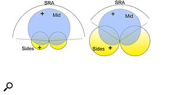Adjusting the relative sensitivity of the Sides mic in an M-S array alters the SRA, and thus the perceived stero width.How M-S arrays are decoded to create virtual figure-8 or cardioid coincident X-Y arrays.
{kind=link}
The first practical Ambisonic mic, engineered by Calrec, became known as the SoundField microphone system [a modern version of which features in this month’s Session Notes column — Ed]. The mic contains four subcardioid capsules mounted in a tetrahedral arrangement (known as the A-format), but those four signals are transcoded in the mic’s controller/processor unit into a set of four B-format signals. These B-format signals form the universal core of the Ambisonic system, and comprise three orthogonal virtual figure-8 polar patterns plus an overall omnidirectional pattern. These signals are identified as: W (omni), X (front/back figure-8), Y (left/right figure-8), and Z (up/down figure-8), with the first direction listed in each case being the positive figure-8 lobe.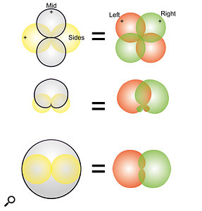Using different polar patterns for the Mid mic in an M-S array results in different polar patterns in the decoded ‘virtual X-Y’ array.
{kind=link}
By combining the four B-format signals in various proportions it’s possible to synthesize a virtual mic pointing in any direction, with any standard polar pattern. More importantly, any number of these virtual mics can be created simultaneously, to synthesize any required coincident stereo or surround array and provide any stereo or multi-channel output configuration — at the time of recording or as a post-production process. And, as a coincident system, the Ambisonic array is inherently mono-compatible.
Double M-S
Although a brilliantly clever system, early SoundField mics were relatively bulky, and their three-dimensional sound imaging is not a requirement for conventional (5.1 and 7.1) surround-sound. And this brings me on to a simplified, more compact system which has become popular in film and TV work — the Double M-S or ‘MSM’ format I mentioned at the outset. This can be thought of equally well as an overgrown, double-ended Mid-Sides arrangement, or a cut-down (two-dimensional) Ambisonic array. The important points are that Double M-S is capable of capturing full horizontal surround sound (from which can be derived virtual stereo arrays), and it is completely mono-compatible.
Perhaps the ‘MSM’ moniker describes the physical arrangement most obviously: the system is constructed from a standard Mid-Sides array with the addition of an extra Mid microphone pointing directly backwards. As with Mid-Sides, the Sides mic is a sideways-facing figure-8, but each of the two Mid mics can have any polar pattern — they needn’t be the same.
The surround-sound output is created by generating a forward-looking virtual X-Y stereo array, using the front Mid mic transcoded with the Sides mic, and a separate rear-facing virtual X-Y stereo array is created simultaneously by transcoding the rear-facing Mid mic with the same Sides mic. For 5.0 surround, the front Mid mic can also be routed directly to the centre channel, leaving the decoded front M-S pair to generate the front left/right channels, and the rear M-S pair generating the rear left/right surround channels.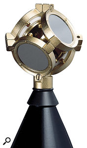The capsule of a SoundField microphone, and an illustration of the SoundField’s B-format.
{kind=link}
Double M-S is a very elegant system, which can be housed relatively easily in the ‘Zeppelin’ style wind-shields used routinely for location sound, because all three mics are usually aligned one above the other. It’s also very efficient, because only three input channels are required to record a complete 5.0 horizontal surround-sound signal. It offers immense flexibility in post-production to create front and rear sound stages with adjustable width, prominence and focus.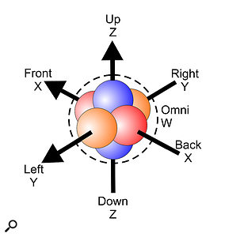
{kind=link}
Modifying Double M-S For Music
Although conceived as a simple surround-sound system, the Double M-S idea can be ‘bent’ a bit to make it genuinely useful in other recording applications where two separate stereo sound stages are required, while maintaining mono compatibility and avoiding comb-filtering. This is harder to achieve using multiple conventional X-Y arrays, as the practicalities of mounting hardware forces physical spacing between them.
In the Double M-S surround-sound application described above, all three mics operate on the same horizontal plane, with the front and rear Mid mics facing in completely opposite directions. However, there’s nothing to prevent you redirecting the rearward Mid mic towards the front as well, making the system work a bit more like an Ambisonic mic, with different virtual stereo arrays pointing in different directions, all from the same coincident point source! Put another way, you can synthesize separate virtual stereo X-Y arrays pointing in any desired direction along the plane of the null of the Sides mic. All that’s needed is to manipulate the two Mid mics to point in the appropriate directions along that plane, and then transcode each one with the Sides mic as before to create multiple coincident virtual stereo arrays.
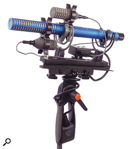A typical lightweight broadcast Double M-S (‘MSM’) array, using small-diaphragm Schoeps mics, with an illustration (below) of the polar patterns of the three mics. 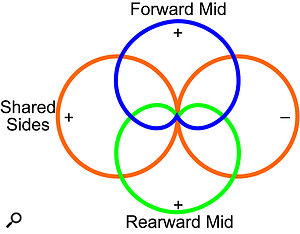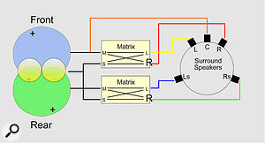The Double M-S array’s single figure-8 mic and two directional mics’ signals can easily be decoded into 5.0 surround.An obvious practical example for this arrangement is the classic situation of a singing guitarist, as I alluded to earlier and as shown in the image at the top of this article — I can say this with confidence because I’ve tried it! If the Double M-S array is positioned at a level somewhere between the guitar and singer’s mouth, with the Sides mic facing left-right, one Mid mic can be aimed down towards the guitar while the other is aimed up at the mouth. The three signals can then be transcoded to provide separate stereo images of the guitar and voice (with an appropriate amount of room ambience) and they can be mixed together with whatever stereo widths might be required, without fear of comb filtering due to phase cancellation.
{kind=link}
{kind=link}
{kind=link}
Moreover, if the polar patterns of the two Mid mics are chosen and positioned thoughtfully, it’s possible to maintain a very high degree of separation between the two sources while still retaining good stereo widths. The key is to choose polar patterns that allow the unwanted source to be positioned along the pattern’s null axis, and angling the mic accordingly.
There are other applications where a variation of this Double M-S array idea might be usefully employed too. Any situation where performers need to face each other could be a good candidate, for example, or where a physically large ensemble needs to be captured.
Being practical, Double M-S is easiest to set up with small-diaphragm mics — I tend to use a Sennheiser MKH30 (figure-8) and MKH40s (cardioids), or an MKH30 with Neumann KM184s or 185s. However, it can also be constructed with large-diaphragm mics if you don’t have SDCs to hand; it just gets a bit bulky! The important thing is to maintain the tightest possible coincidence between capsules, which is best achieved by placing the sideways-facing Sides mic in the middle, with the Mid mics directly above and below, the top mic being inverted to place the capsule as close as possible to the Sides mic’s capsule.
Polar Exploration
In case algebra makes your head spin, here’s a visual way of understanding M-S transcoding. Blumlein’s original M-S array used figure-8 mics. The transcoded Left channel output is the result of summing the Mid and Sides — where the pickup lobes of the two mics are in the same polarity they add, and where they’re opposite they cancel. The result is a virtual figure-8 mic, rotated 45 degrees left. The Right channel is the difference between the Mid and Sides — you add the Mid signal to a polarity-inverted version of the Sides. The polarity flip swaps the positive and negative lobes of the Sides mic, so adding that to the Mid mic produces a new virtual figure-8 facing 45 degrees right. So, an M-S array constructed with a figure-8 Mid mic gives you a virtual coincident X-Y array of crossed figure-8 mics — the classic ‘Blumlein pair’.
The same technique can be used where the Mid mic has a different polar pattern. A cardioid pattern comes from combining a pressure-operation capsule (omni) and pressure-gradient capsule (figure-8) in equal parts. So, if the diagram is redrawn with the forward-facing cardioid Mid mic replaced with separate omni and fig-8 elements, we actually have the same arrangement as with the dual figure-8 capsules, but with an extra omni element added in. Combining the two figure-8 elements, as before, produces virtual figure-8s facing 45 degrees left and right. Adding the omni element creates an equivalent X-Y array of cardioids facing 45 degrees left and right.